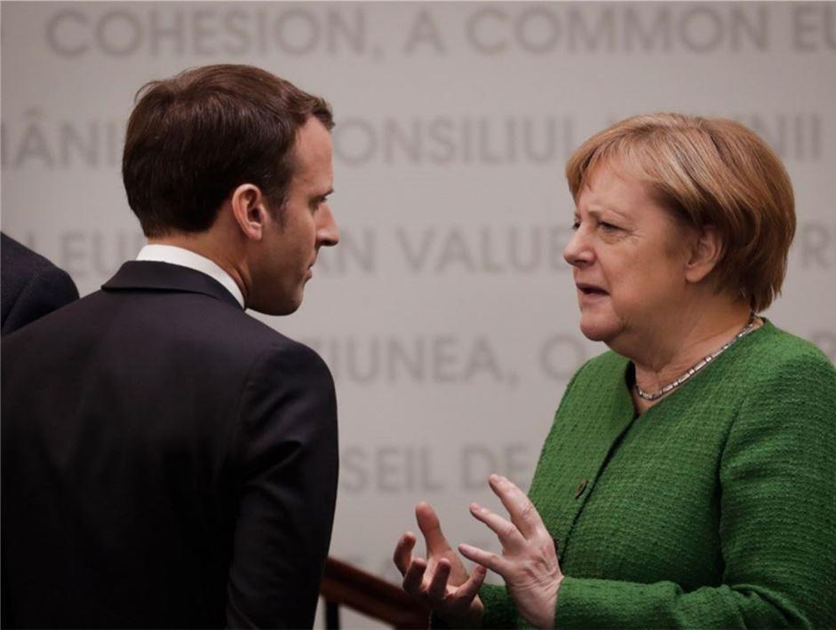
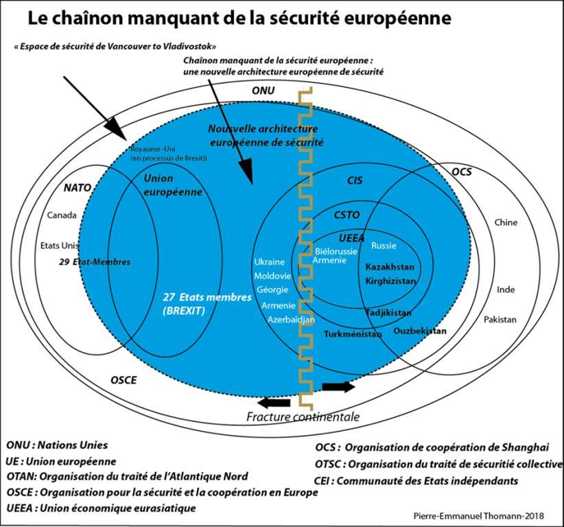

Géopolitique de la France et réforme du projet européen : les avantages d’un pivot vers la Russie
par Pierre-Emmanuel THOMANN
Le diagnostic : fragmentation du monde et nouvelle rivalité des puissances
La nouvelle rivalité des grandes puissances à l'échelle mondiale s'est imposée comme représentation géopolitique dominante depuis la désignation par les États-Unis de la Russie et la Chine comme adversaires stratégiques. C'est le temps des grandes manœuvres géopolitiques dans les espaces terrestres, maritimes, aériens mais aussi le spatial, le cyberespace, l'espace numérique et l'espace-temps de l'intelligence artificielle.
La fragmentation géopolitique du monde qui suivait son cours avant la pandémie de coronavirus sort aujourd'hui renforcée.
C'est un moment inédit pour identifier les grandes tendances de la géopolitique mondiale, mais aussi de réfléchir à la posture de la France dans le monde post-coronavirus, notamment pour proposer des inflexions et des adaptions en termes de priorités géopolitiques et d'alliances.
L'ordre géopolitique qui émerge fait à nouveau de l'Eurasie l'enjeu majeur, tandis que l'Afrique et l'Amérique du Sud restent des théâtres secondaires.
Les États-Unis, pour ralentir la nouvelle multipolarité et défendre leur statut de première puissance en érosion, sont déjà engagés dans une manœuvre mondiale d'enveloppement de l'Eurasie avec un front Est-européen et balkanique visant la Russie et la stratégie indopacifique contre la Chine. La Chine, puissance ascendante, réplique par sa stratégie de désenclavement avec le projet des nouvelles routes de la soie dans leur dimension territoriale (Eurasie), maritime, spatiale et numérique. La Russie, partisane d'un monde multipolaire, a élaboré son projet de « Grande Eurasie »1 avec en son centre l'Union économique eurasiatique dans le cadre d'un pivot vers l'Asie pour résister à la pression des États-Unis qui imposent leurs priorités à l'OTAN et à l'Union européenne (UE). Elle fait aussi un retour en Afrique et en Amérique du Sud. La Chine et la Russie contestent toutes deux l'ordre géopolitique occidental unipolaire issu de la fin de la guerre froide. (Carte n°1: Géopolitique de la nouvelle rivalité des puissances; Carte n°2 : Les nouvelles routes de la Soie; Carte n°3 : projet russe de grande Eurasie).
CARTE N° 1
CARTE N° 2
CARTE N° 3
L'Union européenne, puissance normative, fait du multilatéralisme sa doctrine principale. Elle fait aussi la promotion d'un monde régit par le droit international et les droits de l'Homme sur le principe idéologique de la société ouverte et du libre échange2. Elle est en désaccord avec l'unilatéralisme des États-Unis et revendique une autonomie stratégique. Elle se considère toutefois complémentaire de l'OTAN. Puisqu'elle refuse le modèle du monde multipolaire3, elle était jusqu'à présent proche des priorités géopolitiques des États-Unis en envisageant la Russie comme un défi stratégique, et la Chine comme un défi systémique. L’UE n'a donc pas de stratégie géopolitique autonome, malgré quelques différends sur certaines crises avec les États-Unis. Les désaccords entre ses États membres à l'occasion des crises successives, y compris la dernière crise sanitaire, ont souligné qu'elle poursuit sa trajectoire de fissuration croissante, avec le Brexit, le clivage Nord-Sud (zone Euro) et Est-Ouest (crise migratoire).
La nouvelle rivalité géopolitique franco-allemande sur les finalités européennes4 est l'épicentre de la crise de l'UE. Le cœur du projet européen est constitué par l'Allemagne qui se perçoit comme une puissance centrale et la France, une puissance d'équilibre qui oscillent entre rivalité et coopération dans le « couple franco-allemand ».
 L'asymétrie croissante entre les deux pays est encore renforcée par la pandémie au profit de l'Allemagne comme puissance centrale. Celle-ci conforte sa position comme centre de gravité géopolitique de l'UE depuis sa réunification et les élargissements successifs.
Cette évolution est tempérée par la volonté du « couple franco-allemand » asymétrique de sauvegarder le marché unique par un plan de relance européen temporaire à l'occasion de la pandémie. Ce faisant, les désaccords de fond sont remis à plus tard et ce plan ne sera pas en mesure de résoudre les fractures internes. L'UE, construction sui generis en chantier permanent masque la hiérarchie réelle du pouvoir des États qui décident en coulisses. Les grands États membres de l'UE, comme les plus petits, poursuivent des visions géopolitiques différentes qui finissent souvent par se neutraliser.
Quelle pourrait être la nouvelle posture géopolitique de la France, notamment en termes de priorités géopolitiques et d'alliances pour s'adapter à cette nouvelle configuration mondiale ?
Examinons quelques pistes à l'échelle européenne et mondiale.
Une stratégie géopolitique pour se positionner dans la configuration géopolitique émergente
La géopolitique est un outil stratégique au service de la défense des intérêts de la nation, de son indépendance, sa souveraineté et son épanouissement. Une stratégie géopolitique de puissance est au service d'un projet national qui détermine les alliances pour y parvenir. Un débat stratégique continu devrait aussi mener à des adaptations de la stratégie nationale dans un monde précaire et instable, traversé de crises perpétuelles, avec une anticipation des risques et des menaces, suivi de la désignation claire de l'ennemi.
Pour manœuvrer au XXIe siècle dans un monde en recomposition, il faut une stratégie géopolitique conçue comme stratégie intégrale et spatio-temporelle, faisant office de démultiplicateur de puissance. Car la maîtrise du territoire et du temps, au service d’un objectif politique, reste un atout décisif et un élément central de souveraineté. La maîtrise de l’espace-temps d’un acteur géopolitique dépend de sa capacité d’anticipation ou de réaction sur l’espace-temps des autres. Une revalorisation des logiques d’équilibre ancrées dans l’archéologie stratégique européenne serait adaptée à la configuration géopolitique d’un monde de plus en plus multi-centré. La doctrine de l’équilibre a été en partie oubliée au profit d’une doctrine idéologique de promotion de la démocratie.
La remobilisation de la nation sur ses propres représentations géopolitiques issue de ses fondamentaux historiques et sa position géographique est l'étape préalable à la promotion d'une vision européenne et mondiale. L'enjeu est de ne pas se faire dicter par d'autres, les paradigmes de pensée, le diagnostic et ses priorités par les autres acteurs, alliés comme adversaires pour promouvoir sa vision du monde et la place que l'on souhaite y avoir. Autrement dit, c'est celui qui a l'initiative qui impose les inflexions géopolitiques. Pour adopter une stratégie géopolitique, il faut se positionner au centre de la carte et se projeter dans les différentes espaces. Les facteurs de puissance à mobiliser sont en constant élargissement: le militaire, la diplomatie, l'espionnage, le nucléaire, l'énergie, l'économie, la monnaie, la finance, l'industrie, l'agriculture, la recherche et l'innovation, l'environnement, la démographie, la langue (francophonie), la culture, le droit, l'éducation, le patriotisme et la conscience nationale, l'information, la communication stratégique et l'intelligence artificielle.
Si la stratégie géopolitique est l'anticipation sur l'espace temps des autres acteurs, la France et ses partenaires européens seraient bien avisés de remédier à ce scénario particulièrement défavorable aux Européens. Avec la crise sanitaire et la crise économique, le réflexe des Etats membres de l'UE sera de se concentrer sur les enjeux nationaux et questions internes à l'UE en négligeant les relations extérieures. C'est un mauvais calcul car les grands acteurs de la géopolitique mondiale n'attendront pas les Européens.
La France, charnière et puissance d'équilibre européenne
Pour la France, exploiter les potentialités que lui offre la géographie suggère un positionnement comme pôle de puissance et facteur d’équilibre à la charnière des espaces géopolitiques euro-atlantique, euro-asiatique, euro-méditerranéen, africain et euro-arctique.
Sa vocation est de promouvoir un monde multipolaire sur la base de l'équilibre des puissances afin d'éviter toute hégémonie mondiale, de la souveraineté des États-Nations dont elle est le prototype historique, de la liberté des peuples à maîtriser leur destin en préservant leurs héritages historiques et culturels (l'enracinement), et d’un nouvel équilibre entre l'homme et la nature combinant humanisme et innovation technologique pour les générations futures. Cette posture devrait être clairement identifiable dans le monde pour son propre prestige mais aussi pour son rôle positif dans la résolution des crises.
La manœuvre principale d'une nouvelle stratégie géopolitique de la France pourrait se résumer ainsi : amorcer un « resserrement géographique et stratégique » sur les priorités essentielles, repenser les alliances en vue d’atteindre un poids géopolitique suffisant pour reconstruire la puissance française au niveau européen et mondial. (Carte n°4 : France, puissance d'équilibre, charnière européenne).
CARTE N° 4
Le « resserrement géographique et stratégique » se définit comme la prise en compte du principe de « proximité géographique » afin que la sécurité globale de la France dépende moins de processus non maitrisables dus à leur éloignement, mais aussi comme une concentration de l’action et une économie des moyens. L’ouverture anarchique à la mondialisation renforce les vulnérabilités européennes sur des espaces sur lesquels la France et ses partenaires de l’UE ont peu de contrôle. Un « resserrement géographique et stratégique » réussi se mesure par une moindre exposition de la France aux menaces à la sécurité globale en réduisant les interdépendances anarchiques (énergétiques, économiques, informationnelles, technologiques, démographiques…) avec des territoires lointains. Cela implique un filtrage plus important des flux (géopolitique des stocks et des flux) aux frontières et de négocier un système de préférences nationales et européennes.
Les États-Unis et la Russie sont les clés de la sécurité et de l'équilibre mondial, mais aussi de plus en plus, la Chine, en particulier pour les Français et les Européens afin d’amorcer une stratégie organisée selon les axes maritimes et continentaux. La position géographique des États européens ne peut pas être valorisée dans un enfermement stratégique, en particulier vis-à-vis de l’Eurasie. La priorité est de parachever un espace de stabilité de Vancouver à Vladivostok (hémisphère Nord), en clarifiant la relation avec les États-Unis, et promouvoir une nouvelle architecture géopolitique en Europe incluant la Russie, encore inexistante, au centre de cet espace. Un rapprochement européen selon l'axe continental et un rééquilibrage de l’alliance euro-atlantique serait indiqué pour que la France et ses partenaires européens puissent peser plus fortement sur la stratégie des États-Unis en fonction de leurs propres priorités. (Cf. Carte n° 2 : La France dans un monde plus équilibré et un projet européen réformé).
La place de la France dans un projet européen réformé dépendra avant tout de sa propre capacité à redéfinir un projet national5 impliquant une reconstruction des outils de puissance. L'étape simultanée est d'opérer un choix d'alliances plus fluides en fonction des crises, des circonstances et des thématiques pour promouvoir la réforme du projet européen. Malgré la crise actuelle et le plan de relance européenne, il est à prévoir que l'UE va rester largement coincée dans ses anciens paradigmes en raison des désaccords à 27 sur les finalités de l'UE dans le monde post-coronavirus. Il serait utile à l'avenir de mettre en avant des thématiques de réformes6 avec d'autres partenaires européens, et oser la rupture lorsque cela est nécessaire, à l'image de l'épisode de la « chaise vide » lorsque le général de Gaulle était en désaccord frontal avec les institutions européennes et les autres États membres. Sans unité de l'UE, l'alternative est de promouvoir des coalitions plus restreintes de partenaires, privilégier le niveau bilatéral, ou agir seule lorsque cela concerne ses intérêts fondamentaux.
CARTE N° 5
Une manœuvre stratégique duale pour surmonter la pire configuration pour l'Europe
La dynamique géopolitique accompagnant la pandémie COVID-19 fait de la rivalité américano-chinoise l'élément structurant pour le monde.
Nous ne pouvons cependant pas comparer cette configuration au modèle bipolaire de la guerre froide, car les États-Unis et l'Union soviétique étaient en concurrence avec deux modèles universels. Le monde chinois est une civilisation plus difficilement exportable que la civilisation occidentale, excepté en Asie, pour aboutir à une bipolarité similaire à la guerre froide. Cela signifie que les États-Unis et la Chine ne pourront pas être en mesure de diviser le monde en deux alliances distinctes, car le monde est devenu plus fluide que pendant la guerre froide et les différents centres de pouvoir resteront asymétriques
Or l'évolution de cette configuration géopolitique pourrait devenir particulièrement défavorable pour la France et ses partenaires européens.
L'Union européenne, avant la pandémie, était coincée dans l'angle de deux arcs de crises, l'un au Sud (menace djihadiste), l'autre à Est (crise entre UE/OTAN et Russie) et risque aussi de devenir l'épicentre occidental de la rivalité américano-chinoise.
Cette évolution réduit la sécurité des Européens tiraillés et divisés entre la rivalité américano-chinoise et la rivalité américano-russe. S'y ajoute la menace djihadiste à partir de l'arc de crise au Sud de l'Eurasie (Sahel/Méditerranée-Proche Orient-Afghanistan) qui fait de l'Europe son espace d'expansion sur le terreau des nations européennes fracturées par les vagues d'immigration sans assimilation.
Quelles sont les options pour la France et ses partenaires européens dans cette configuration en évolution ?
La manœuvre stratégique duale et prioritaire serait d'éviter l'aspiration effrénée de la France et ses partenaires européens dans une rivalité américano-chinoise frontale et l'enfermement entre les deux arcs de crises dans sa proximité géographique au Sud (du Sahel à l'Afghanistan) et à l'Est (de l'Océan arctique à la Mer noire).
Le théâtre principal pour la France reste l'Europe et ses hinterland eurasien (Russie, Turquie, Caucase, Asie centrale) et euro-méditerranéen (Maghreb/Sahel, Proche et Moyen Orient) en raison de la géographie et des alliances (UE-OTAN).
Toutefois, la France a aussi besoin d'une stratégie Méditerranée-Pacifique, c'est à dire le long d'un axe allant du Proche Orient à l'Extrême Orient en passant par la Méditerranée et l'Océan indien, passage de la métropole aux archipels et zones économiques exclusives des Océans indien et pacifique.
La stratégie indopacifique des États-Unis pour endiguer la Chine amène la France qui est aussi une puissance du Pacifique à se positionner avec ses propres priorités. La concertation avec la Russie, l'Inde, le Vietnam, Taïwan, la Corée du Sud, le Japon, l'Australie, la Nouvelle Zélande lui donne l'occasion de jouer le rôle de puissance d'équilibre vis à vis de la rivalité entre les États-Unis et la Chine.
Le pivot vers la Russie dans la cadre de la rivalité américano-chinoise
Dans le paradigme de la rivalité des grandes puissances et à l'inverse de la Guerre froide, le monde n'est plus aux alliances exclusives, mais aux postures souples et agiles. Pour élargir sa marge de manœuvre dans les négociations, il est utile de montrer que l'on peut avoir des alliances alternatives.
La France et les Européens ne doivent pas rester inactifs par rapports aux grandes manœuvres des autres puissances. Une UE réformée et la Russie peuvent échapper à se transformer en partenaires juniors des projets géopolitiques rivaux, l'UE restant un sous-élément périphérique du « Grand Occident » avec les Etats-Unis comme chefs de file et la Russie un sous-élément de la « Grande Asie » avec la Chine comme centre géopolitique.
Pour desserrer cet étau obligeant les Européens à agir sur plusieurs fronts simultanés qui épuisent leurs ressources, amorcer un pivot vers la Russie serait une manœuvre stratégique indiquée. Cette manœuvre serait d'autant plus pertinente que la posture des États-Unis va forcer les Européens à se déterminer sur leur relations vis à vis de la Russie et la Chine.
Si une inflexion des relations américano-russes se manifestait à l'avenir sur des thématiques précises, il serait utile d'éviter pour les Européens de se faire doubler sur une éventuelle reprise des échanges économiques et des accords énergétiques.
Le scénario le plus probable est celui ou les États-Unis continuent de penser qu'il est nécessaire d'endiguer de manière duale la Russie et la Chine. Les Européens devraient éviter d'être considérés comme des acteurs de second rang à diviser ou enrôler aussi dans le cadre la rivalité américano-russe. Le réflexe de la Russie est de chercher à rétablir un meilleur équilibre stratégique avec les États-Unis sur le théâtre mondial et en Europe. La Russie privilégie donc la relation avec les États-Unis comme partenaire de négociation au détriment des États membres de l'UE, qui sont trop souvent divisés ou alignés et donc considérés comme partenaires négligeables. Un rapprochement entre les Européens et la Russie atténuerait cette tendance. Il serait judicieux pour les Européens de peser sur la rivalité américano-russe, notamment la question de la nouvelle course aux armements nucléaires7 qui menace la sécurité des nations européennes.
La Russie n'est pas une menace, ni pour la France ni pour les Européens. Elle n'est donc pas un ennemi, malgré les tentatives de l'OTAN de s'engager dans une « nouvelle guerre froide » qui fragmente dangereusement l'Europe. (Carte n° 6 : Nouvelle architecture géopolitique européenne)
Cette nouvelle dynamique est une occasion pour la France et ses partenaires européens favorables à cette approche de tenter de surmonter la crise entre la Russie et l'UE, d'autant plus que des voix s'élèvent en Russie pour s'engager dans une nouvelle doctrine de « non-alignement »8. C'est un moment à saisir pour éviter de cristalliser cette fracture au milieu de l'Europe. Le rapprochement avec la Russie est envisageable car sa posture de « non-alignement » 9 vis à vis de la confrontation croissante entre Les Etats-Unis et la Chine mais aussi son projet de « Grande Eurasie » offre une place aux Européens pour équilibrer la Chine, qui restera, quels que soient les scénarios un axe majeur de la géopolitique russe.
En effet, la Russie ne s'alignera pas sur une alliance occidentale sous domination des États-Unis contre la Chine. La Russie ne s'alignera pas non plus sur la Chine dans cet affrontement de la même manière que la Chine a préservé une posture indépendante face à la crise entre les États-Unis/alliés européens et la Russie. Les Européens appuieraient ainsi la posture de plus grande neutralité de la Russie vis à vis de la Chine10.
Une prise de distance des Européens face à la tension sino-américaine, dont le théâtre principal restera éloigné des zones les plus sensibles et prioritaires pour les intérêts européens, comme la menace djihadiste dans l'arc de crise au Sud, serait plus judicieuse, notamment au sein de l'OTAN. (Carte n° 7 Options géopolitiques des Européens face à la rivalité américano-chinoise).
Une approche frontale vis à vis de la Chine aboutirait aussi à une fragmentation de l'UE et un refus de l'Allemagne comme puissance économique de se priver du marché chinois. Par contre un rapprochement entre UE et Russie donnerait plus de poids aux Européens vis à vis de la Chine.
Le scénario le plus approprié pour plus d'autonomie stratégique de la France et des Européens serait donc un rôle de modération avec la Russie dans cette confrontation mondiale croissante entre les États-Unis et la Chine. Cela éviterait aux Européens d'être soumis à une forme de condominium États-Unis/Chine marginalisant l'UE et la Russie dans les affaires mondiales. Des synergies entre Européens, Américains et Russes seront toutefois nécessaires pour contrer une montée en puissance sans limite de la Chine.
Un rapprochement entre l'UE et la Russie vis à vis du projet des nouvelles routes de la soie donnerait aussi plus de poids aux Européens vis à vis de la Chine pour éviter une pénétration sans limite des intérêts chinois en Europe11.
La formation d'une coalition d'États volontaires serait appropriée pour agréger un poids politique suffisant au sein de l'UE, ou en dehors, afin d'entamer des discussions sur cette nouvelle approche12.
CARTE N° 6
CARTE N° 7
La « Grande Europe» entre un « Grand Occident», la « Grande Eurasie » et la « Grande Asie »
L'idée est de relancer une « Grande Europe » pour positionner les Européens entre un « Grand Occident » centré sur les États-Unis et leur nouvelle doctrine « America First », le projet de « Grande Asie/nouvelles routes de la soie » de la Chine, et le projet de « Grande Eurasie » de la Russie dont le cœur est l'Union économique eurasiatique. Ces initiatives vont se chevaucher, souvent rivaliser, mais parfois aussi se compléter.
Les Européens ont tout à perdre à continuer à s'aligner sur les priorités géopolitiques des Etats-Unis. La doctrine unilatéraliste, un moindre intérêt vis à vis de l'Alliance atlantique, la méfiance à l’égard des institutions et traités multilatéraux en général, y compris l'UE de la part du président américain Donald Trump dans le cadre de la doctrine "America First" ne signifie pas le retrait des États-Unis de l'Europe ou du monde. Les États-Unis continueront de défendre leurs intérêts de manière plus ciblée selon leurs propres priorités et exerceront leur influence au travers des alliances bilatérales.
Les États-Unis font de l’Europe un « Rimland », c’est-à-dire un espace côtier sous leur contrôle qui bloque une orientation de l’UE vers l’espace eurasien, et donc vers la Russie, mais aussi la Chine par voie continentale. L’Europe n’est qu’un des théâtres de leur stratégie géopolitique vis-à-vis de l’Eurasie, qui consiste à envelopper ce continent par les fronts est-européen et indopacifique. Une orientation exclusive selon le scénario euro-atlantiste implique donc pour les Européens de se positionner dans les limites imposées par les priorités géopolitiques des États-Unis, et d’agir en conformité ou de s’abstenir. Dans cette configuration, une politique d’équilibre des Européens en fonction de leur propre géographie est donc rendue très difficile. Le scénario exclusif euro-atlantiste rend impossible in fine pour les Européens de décider de leurs propres finalités, faute d’avoir élaboré leurs propres priorités. Ce scénario tendanciel affaiblit les Européens car il fait d’eux une variable d’ajustement de la géopolitique mondiale. (Carte n° 1 Géopolitique de la nouvelle rivalité des puissances)
De son côté la Russie se positionne pour promouvoir un monde multipolaire. Le projet de « Grande Eurasie » de la Russie est une vision géopolitique à l'échelle du continent Eurasien, pour promouvoir la coopération politique et économique entre les États et les nations de l'océan Atlantique au Pacifique. Dans cette configuration, la Russie se positionne comme un pivot /centre politique au carrefour des espaces de sécurité qui se chevauchent de Vancouver à Vladivostok (OTAN et OSCE, USA-UE-Russie), de Lisbonne à Vladivostok (UE-Russie), de Saint-Pétersbourg à Pékin (Organisation de Coopération de Shanghaï, OCS) et Minsk-Douchanbé (Organisation du traité de sécurité collective - OTSC et Union économique eurasiatique-UEEA). Les principaux moteurs et pôles de l'intégration de la grande région eurasienne sont l'Union économique eurasiatique (UEEA) et le projet des routes de la soie Chinoises. (Carte n° 3 - Projet russe de Grande Eurasie).
La question centrale pour la France et ses partenaires européens en phase avec ses priorités est donc de manœuvrer afin que les visions géopolitiques de la « Grande Eurasie » avec l' Union économique eurasiatique (UEEA) en son centre et une nouvelle « Grande Europe » puissent être complémentaires. La Russie est en faveur de la création d'un espace économique commun entre l'UE et l' UEEA, sur le principe de sécurité indivisible et d'égalité entre les États. Ce projet s'éloignerait de l'idéologie de l' « occidentalisation » de la Russie qui renforce les malentendus.
Le projet précédent d'une « Grande Europe » promu après la guerre froide avec la Russie a échoué car il était basé sur un alignement de la Russie sur les principes normatifs de l'UE et de l'OTAN selon une relation asymétrique. A rebours de la réintégration dans un nouveau concert des nations de la Russie sortie affaiblie de la guerre froide, c’est un refoulement dans ses terres continentales qui a été privilégié par le projet euro-atlantique. La poursuite de l’extension de l’Union européenne et de l'OTAN aux pays de l’ex-URSS de manière non concertée n’a pas favorisé non plus la confiance, d’autant plus que du point de vue des Russes, Union européenne et OTAN avancent de concert.
La crise en Ukraine en 2014 a enterré le partenariat stratégique entre la Russie et l'UE. L'idée de l'Europe continentale de « Lisbonne à Vladivostok » sur des bases nouvelles n'en deviendrait pas moins pertinente face à l'évolution du monde vers la fragmentation géopolitique, la rivalité des puissances. et les conflits de civilisation.
En réintégrant la Russie dans les plans stratégiques, la manœuvre aurait le double avantage d’assurer plus de sécurité aux Européens en modifiant les équilibres externes, et d'aborder la question des déséquilibres internes de l'UE dans le contexte du Brexit.
La configuration géopolitique mondiale et européenne émergente se prête aux anticipations du général de Gaulle qui avait envisagé une « Europe de l’Atlantique à l’Oural » sur la base des États et des nations lorsque la Russie serait sortie du communisme. La vision stratégique du général de Gaulle (1958 à 1969) portait sur la réalisation d'une « Europe européenne », c’est à dire une Europe des patries, refusant la logique des blocs et prenant son indépendance vis à vis des États-Unis, à partir d’un noyau franco-allemand, mais sans détricoter l'Alliance atlantique13.
De plus, la Russie fait culturellement partie de la civilisation Européenne. .
La géopolitique, c'est aussi la rivalité des modèles de civilisation sur le territoire. La préservation de la civilisation européenne dont la Russie est un des piliers (héritage de l'Empire romain d'Orient - Byzance) est nécessaire. D'où la nécessité de dépasser le clivage européen issu du schisme de 1054 entre Eglises d'Orient et Eglises d'Occident qui ont eu des répercussions géopolitiques décisives jusqu'à aujourd'hui; afin de réunifier un grand Occident européen14.
Endiguer et combattre les idéologies multiculturalistes et communautaristes qui mènent aux conflits ethnoculturels et raciaux issus du modèle libéral américain sont des éléments de synergie à promouvoir avec la Russie mais aussi avec les forces politiques aux États-Unis. entrées en résistance contre ce progressisme favorisant la déconstruction. La promotion conjointe d'un nouveau réalisme avec la réhabilitation des frontières, l'immigration maîtrisée et choisie, la souveraineté des nations et la préservation des héritage culturels et historiques va de pair avec cette approche. La lutte contre le révisionnisme historique est aussi nécessaire car la rivalité des narratifs historiques fait aujourd'hui partie intégrante des rivalités géopolitiques.
POUR RECONSTRUIRE LA NATION ET SON ANCRAGE CIVILISATIONNEL, L'AVENIR DE LA FRANCE EST À L'EST
Il n'y a pas de nation sans territoire. Le territoire constitue l'espace d'enracinement de la nation mais aussi un espace sécurisé par des frontières à l'intérieur desquelles s'est développée au fil des siècles une identité particulière. Or la France est sur une trajectoire de fissuration territoriale avec des zones dans lesquelles se développe un processus de différentiation territoriale causé par des fractures sociales, économiques, politiques, culturelles, identitaires et religieuses. Le conflit de civilisation avec l'islam politique mais aussi la dérive rapide vers les rivalités ethnoculturelles au sein de la population préparent selon le scénario le plus pessimiste, des sécessions territoriales irrémédiables. L'enjeu national pour la France est de retrouver la maîtrise de son destin pour choisir son propre modèle de civilisation. Cela passe par la reconquête des territoires perdus de la nation, simultanément à la maitrise de ses frontières pour endiguer l'immigration. Sans résoudre cette fracture interne croissante, la France va s'affaiblir au niveau international et prêter le flanc aux ingérences, au travers du prosélytisme islamiste, du communautarisme voire du terrorisme, dans le cadre de manœuvres de division orchestrées par des acteurs hostiles intérieurs et extérieurs.
Pour réussir cette reconquête de plus de plus ardue si on repousse l'échéance, bâtir un front commun entre la France et les nations européennes qui n'ont pas encore autant subi la déconstruction identitaire et civilisationnelle de la post-démocratie libérale basée sur l'idéologie hors-sol de la société ouverte15 aujourd'hui dominante à l'ouest de l'Europe sera décisif. Un rapprochement avec la Russie, ainsi que les pays d'Europe orientale, sources d'inspiration est dans cette optique inévitable.
Promouvoir une nouvelle architecture européenne de sécurité
Parallèlement à une nouvelle approche stratégique, la reconquête progressive de la confiance réciproque est nécessaire dans une première phase par la mise en avant de thématiques de coopération ciblées selon le principe de l'« engagement sélectif » de l'UE16.
Les Européens pourraient aussi s'inspirer du modèle japonais (les différents territoriaux entre la Russie et le Japon) : il existe un différend irrémédiable comme la non-reconnaissance de nouvelles frontières (la Crimée) mais la coopération se poursuit.
Le « deux poids deux mesures » si l'on examine la relation avec la Turquie est aussi flagrant: Les désaccords fondamentaux entre la Turquie et l'UE au sujet de Chypre n'ont pas empêché les négociations d'adhésion à l'UE et la création d'un marché commun alors que la Turquie occupe militairement le territoire d'une Etat membre de l'UE, et la république turque de Chypre du Nord n'est pas reconnue par l'UE. Il s'agit bien en fin de compte de volonté politique, et non pas de droit international.
THÉMATIQUES DE COOPÉRATION AVEC LA RUSSIE
Les thématiques de coopération avec la Russie peuvent être mises en avant par des coalitions fluides et variables d'Etats européens sur des thématiques diverses, et soutenues lorsque c'est possible par l'UE selon le principe de l'engagement sélectif17, et pourquoi pas au sein de l'OTAN. La communication stratégique est aussi primordiale et le narratif sur l'avantage d'un rapprochement avec la Russie doit être mis en avant.
Les sujets ne manquent pas :
-rapprochement franco-russe pour lutter contre le terrorisme islamiste et endiguer la Turquie, en Syrie, en Libye et dans le Caucase,
-rapprochement franco-russe en Afrique : si la France ne s'ingérait pas à la remorque de l'OTAN dans la zone de sécurité prioritaire de la Russie en Eurasie, une négociation pourrait s'engager afin que la Russie s'abstienne dans les zones prioritaires des intérêts français en Afrique,
- surmonter la spirale des sanctions entre l'UE et la Russie, alors que les Etats font face à une crise économique majeure après la pandémie Covid-19,
- aborder la question de la nouvelle course aux armements nucléaires en Europe et les conséquences d'un probable abandon du traité START afin d'éviter que le théâtre européen ne redevienne un champ d'affrontement américano-russe,
- poursuivre la coopération avec la Russie comme partenaire énergétique et économique incontournable, y compris dans l'Europe post-coronavirus car elle détient les réserves de gaz, le pétrole et les minéraux rares. ( le moment est propice pour profiter de la baisse du prix du gaz et du pétrole)
- au niveau économique, promouvoir l'idée d'une négociation entre l'UE et l'Union eurasiatique,
- reprendre les négociations pour faciliter les visas avec la Russie serait aussi utile pour renforcer les échanges économiques, universitaires, culturels et touristiques,
- la coopération en matière de numérisation, sur le big data et l'intelligence artificielle serait aussi nécessaire pour développer avec la Russie ces outils de souveraineté et éviter l'hégémonie des Etats-Unis er la Chine sur ces thématiques,
- la coopération en matière de protection de l'environnement et le changement climatique.
VERS UN NOUVEL ORDRE GÉOPOLITIQUE
Pour solidifier la stabilité européenne à plus long terme, l'idée d'une nouvelle architecture européenne de sécurité de « Lisbonne à Vladivostok » incluant la Russie devient encore plus pertinente. En effet, seule une négociation d'envergure continentale incluant la Russie est susceptible de rétablir la confiance
Pour aller vers plus d'autonomie stratégique pour les Européens, l'idée d'une nouvelle architecture européenne de sécurité avec la Russie initiée par la France avant la pandémie pourrait être prolongée sur des bases plus solides sur le modèle d'une Europe des nations souveraines et le principe de l'équilibre géopolitique. Le concept d’une sécurité plus équilibrée pour toutes les nations du continent européen et eurasien doit remplacer la doctrine d’expansion de l’OTAN, qui risque la sur-extension. L’ordre géopolitique euro-atlantique issu de la guerre froide, qui est exclusif, est obsolète pour promouvoir la sécurité continentale.
Si les Européens veulent tendre vers le projet d’une Europe de la stabilité, une inflexion des politiques poursuivies jusqu’à présent serait bienvenue : La priorité est de surmonter les différents conflits gelés ou actifs (au Donbass et au Haut-Karabagh) dans les pays du partenariat oriental18 de l'UE qui bloquent la relation UE-Russie. L'espoir que la Russie s'alignera progressivement sur la vision euro-atlantiste et fera des concessions au sujets des différents points de désaccords de manière séparée est illusoire C'est la négociation d'un accord continental global qui sera en mesure de surmonter les différents conflits locaux. Rétablir la confiance, c’est ne pas empiéter sur l’espace de sécurité de la Russie afin d’éviter les contrecoups. Cette approche exige de négocier avec la Russie sur les lignes rouges respectives et les zones d'influences afin de préserver l'équilibre et la stabilité. Les deux processus, la résolution de la question ukrainienne19 qui constitue l'obstacle principal pour stabiliser la situation et la promotion d'une nouvelle architecture de sécurité européenne pour éviter une fracture durable et restaurer plus d'unité en Europe devraient se renforcer mutuellement.
Préserver la stabilité du continent européen dans le cadre de cette nouvelle architecture européenne de sécurité réside dans l’acceptation des nouvelles réalités multipolaires afin de ne plus empiéter sur les territoires d’intérêt prioritaires de la Russie et d’arrêter l’expansion euro-atlantiste de l'OTAN et de l'UE aux Etats du partenariat oriental. Cela impliquerait un une « neutralisation » (Ni OTAN, ni UE) de l’Ukraine et comme tous les États issus de l’ex-URSS liés au partenariat oriental. Cet arrêt de l'expansion euro-atlantiste vers l'Eurasie permettrait d'éviter un déplacement du centre de gravité géopolitique continu de l'UE vers les priorités géopolitiques américaines et allemandes au détriment des intérêts d'équilibre de la France.
Stabiliser les frontières permet de combiner leur rôle protecteur avec une ouverture pour les échanges en instaurant la confiance. La fixation de frontières à l’Union européenne renforcerait le projet européen vis-à-vis de ses citoyens et poserait les bases nécessaires à la promotion d’une Grande Europe stabilisée sur le principe des équilibres géopolitiques. Cela implique une réforme du projet européen afin que les Européens identifient leurs propres intérêts géopolitiques avec la Russie, selon leur propre géographie.
Il s’agit de redécouvrir les négociations classiques sur les équilibres européens, eurasiens et mondiaux dans un nouveau concert mondial des puissances. On pourrait imaginer la négociation d’un nouvel espace de sécurité euro-russe de « Lisbonne à Vladivostok » comme sous-ensemble de l’espace de sécurité de « Vancouver à Vladivostok» avec l’Union européenne en position de pivot-charnière, articulé avec la Russie en pivot-charnière voisin de l’Union européenne réformée à l’intersection de l’espace euro-atlantique de « Vancouver à Vladivostok » (OTAN et OSCE), celui de « Lisbonne à Vladivostok » (UE et Conseil de l'Europe), l’espace de « Saint-Pétersbourg à Pékin» (OCS) et celui de « Minsk à Douchanbé » (OTSC). Les espaces de chevauchement entre ces structures entrelacées, feraient l’objet d’équilibres négociés par le biais de synergies entre l’OTAN, l’UE, l’OSCE, l’OTSC, l’OCS. En parallèle de cette initiative, la consolidation de l’OCS et l’OTSC irait dans le sens d’une plus grande stabilisation de la multipolarité.
En termes institutionnels et opérationnels cela pourrait aboutir à la négociation d'un nouveau traité de sécurité européen. le chaînon manquant de la sécurité européenne. (Carte n°8 : le chaînon manquant de la sécurité européenne).
CARTE N° 8

Surmonter l'enfermement de la France et des Européens entre deux arcs de crise
Dans la proximité géographique de l'Europe, les Français et les Européens pourraient éviter de faire face à deux fronts d’États hostiles à l’Est et au Sud, situation qui aggrave leur sécurité européenne et limite leur marge de manœuvre. (Carte n° 9 - L’Union européenne dans l’angle de deux arcs de tensions).
Pour briser l’enfermement européen dans l’angle des deux arcs de tensions au Sud, (révolutions arabes), à l’Est (conflits gelés et chauds issus de la désintégration de l’URSS), la rapprochement avec la Russie est ici aussi un élément clé.
Une double manœuvre stratégique de la France et ses partenaires européens comportant un rapprochement substantiel avec la Russie et une action visant à reconstruire des alliances profitables (et non à risques) au Sud de la Méditerranée seraient les bienvenues. La perspective d’une relation difficile avec les États au Sud de la Méditerranée aspirés dans une période durable de troubles est de plus en plus probable. La Turquie en particulier pratique le chantage migratoire et s'active en Syrie, en Libye et dans le Caucase selon une trajectoire d'hostilité croissante vis à vis des États Européens.
L'avantage de cette manœuvre stratégique bidirectionnelle réside dans la concentration des efforts et éviter la dispersion des moyens pour une gestion partagée des instabilités européennes orientales et l’identification des intérêts communs avec les pays du continent eurasien dans l’arc de crise au Sud, là ou se trouve le véritable ennemi djihadiste.
Il serait utile de dépasser les fractures issues de la guerre froide qui entravent la marche vers la stabilisation continentale, étape préalable nécessaire à une alliance européenne qui pèse dans les équilibres mondiaux. Faire face de manière commune aux déstabilisations qui se propagent dans l’arc de tensions de l’Atlantique à l’Asie centrale et sur le flanc oriental de l’UE et dans les Balkans est nécessaire. La sécurité européenne et celle de la Russie, des pays du Caucase, et l’Asie centrale sont affectées de manière semblable. Car la déstabilisation de l’Asie centrale, talon d’Achille de la stabilité du continent eurasien, à commencer par la question afghane et les débordements issus des révolutions dans les pays arabes, est de nature à créer des tensions graves avec la Russie mais aussi avec la Chine.
Dans le voisinage européen en Afrique du Nord, au Moyen-Orient et dans le Balkans, aucun conflit ne peut durablement trouver un issue positive sans le concours de la Russie comme le différend avec l’Iran et son programme atomique, la désintégration de la Libye, le conflit en Syrie, la lutte contre l’État islamique et la coopération en matière de terrorisme, en Afghanistan ainsi que la stabilité de toute l’Asie centrale, les tensions dans les Balkans.
À l'échelle de l'Union européenne, le rapprochement de la France avec la Russie pourrait être avantageux pour résoudre la question des déséquilibres internes de l'UE et la réforme du projet européen dans le contexte du Brexit.
CARTE N° 9
La Russie, facteur d'équilibre géopolitique en Europe pour rééquilibrer l'axe franco-allemand dans une grande Europe de l'Atlantique au Pacifique
Le couple franco-allemand, outre son image d’unité, détient un rôle de charnière entre l’Europe du Nord et du Sud en raison de son poids économique, démographique et politique et de sa position géographique entre les différentes composantes de l’Europe telles que l’Europe du Nord et du Sud, la Méditerranée et l’Europe centrale, l’Europe latine, germanique anglo-saxonne, et slave.
Toutefois, une nouvelle rivalité géopolitique franco-allemande a surgi depuis l’unification allemande et l’élargissement de l’UE20. Les deux pays sont en rivalité renouvelée pour la position au centre de l’Europe qui allie sécurité et pouvoir dans leurs représentations stratégiques depuis l’unification allemande. La position au centre, c’est initialement la France qui l’avait obtenue avec le rapprochement franco-allemand et le démembrement territorial de l’Allemagne pendant la guerre froide. L’Allemagne a récupéré ensuite sa position centrale après avoir accédé à ses revendications principales, son unification et l’élargissement de l’Union européenne, aboutissant par conséquent à un déplacement du centre de gravité du projet européen vers l’est. Cette situation a conduit une rivalité franco-allemande sur l’orientation géopolitique de l’Union européenne, vers l’est ou le sud. La fonction du couple franco-allemand est de servir d’outil de pouvoir, de charnière irremplaçable dans l’UE. Sa fonction plus implicite est de masquer le déséquilibre franco-allemand au profit de l’Allemagne. L’Allemagne minimise ainsi son rôle de puissance centrale depuis l'élargissement de l'UE, et la France donne l’illusion de la parité. De plus, derrière les accords de façade, les finalités divergent entre les deux pays. Le couple franco-allemand, mobilisé de manière trop exclusive, devient de plus en plus un obstacle à la marge de manœuvre française. Une option alternative impliquerait une vision du couple franco-allemand moins exclusive, comme le conçoit d’ailleurs l’Allemagne, mais avec ses propres priorités. L'objectif serait de favoriser un nouvel équilibre entre l'Allemagne et la France.
Le rôle de charnière de la France et l'Allemagne au centre de l'UE reste un élément central notamment pour les questions économiques et monétaires. Un rééquilibrage est cependant nécessaire aves les pays de l'arc latin comme l'Italie, l'Espagne et le Portugal vis à vis de la gestion de l'euro, les pays d'Europe centrale à propos de la préservation des valeurs de la civilisation européenne21et le Royaume-Uni pour préserver un équilibre européen, surtout après le Brexit. Tous deux en possession de l'arme nucléaire, mais aussi membres du conseil de sécurité permanent de l'ONU, les Français et les Britanniques doivent s'épauler. Dans les Balkans, la Serbie est un État pivot qui a une forte attente vis à vis de la France. Le rôle de charnière de la France et l'Allemagne au centre de l'UE mais aussi l'Italie aux portes des Balkans et de l'Europe centrale est enfin nécessaire pour convaincre les pays d'Europe centrale que leur position médiane est plutôt un atout dans une Europe gérée selon l'équilibre géopolitique. L'objectif est d'éviter de renforcer la tendance à la fragmentation géopolitique entre les pays les plus proches des USA comme la Pologne et les pays baltes, et les pays qui souhaitent se connecter aux routes de la Soie, notamment avec le 17 + 122, et ceux qui se rapprochent de la Russie.
Le Brexit va aussi modifier les équilibres géopolitiques. Il faut rappeler que les Royaume-Uni jouait le rôle de contrepoids tant pour les Français que les Allemands. Un rééquilibrage tenté par un rapprochement entre la France et le Royaume-Uni sur les questions de défense peut fonctionner sur des questions bilatérales comme le nucléaire mais pas dans l’optique d’une « Europe géopolitique », notamment en raison des priorités géopolitiques différentes du Royaume-Uni qui fait de la Russie un adversaire avec les États-Unis.
S'engager de manière prioritaire dans une stratégie de charnière-pivot de la France entre Royaume-Uni et Allemagne comporte le risque de se retrouver de facto le partenaire mineur vis-à-vis des États-Unis et du Royaume-Uni qui restent soudés sur les priorités géopolitiques, tout en devenant le partenaire mineur de la relation franco-allemande sur les questions économico-monétaires.
De manière plus fondamentale, pour rétablir l’équilibre géopolitique franco-allemand, c’est à nouveau la vision continentale d’inspiration gaullienne qui serait pertinente pour que la France retrouve son autonomie stratégique dans une Europe des États-nations. Un rééquilibrage du projet européen orienté aujourd'hui vers un euro-atlantisme exclusif ne peut donc pas être efficace sans un changement d’échelle du projet, de « Brest à Vladivostok », c’est à dire un rapprochement avec la Russie.L’Allemagne étant en situation de saturation stratégique et donc satisfaite du statu quo, c’est donc sur la France que pèse la responsabilité d’engager une manœuvre de rééquilibrage.La France et la Russie, ont intérêt à se rapprocher pour éviter leur marginalisation par rapport à un projet européen dont l’Allemagne deviendrait la puissance centrale régionale d’un grand ensemble occidental centré par gravité sur les États-Unis. Le rapprochement franco-russe préserverait l’option géopolitique d'un axe franco-germano–russe pour signifier à l’Allemagne et les autres partenaires de la France qu'une alternative européenne existe à l’option exclusive euro-atlantique. Une partie de la classe politique allemande et la majorité des citoyens cherchent aussi à éviter une « nouvelle guerre froide » où ils perdraient leur position au milieu de l’Europe entourés d’alliés et de pays stabilisés. (Carte n°10 : L'axe franco-allemand dans un monde multicentré)
CARTE N° 10
La France a besoin de la Russie comme allié décisif pour donner du poids à ses priorités en Europe et la Russie a besoin d’alliés au sein de l’Union européenne pour contrebalancer le tropisme euro-atlantique de l'Allemagne et des pays d'Europe centrale et orientale.
De plus, avec la pandémie, les lectures russe et néo-gaulliste de l'ordre international sont renforcées avec le retour de la nation, de l'Etat, du rôle de la frontière et de la décision souveraine face à l'affaiblissement des organisations internationales et multilatérales. La souveraineté nationale et la doctrine de l'équilibre des puissances redeviennent centrales dans les paradigmes, soulignant le cycle géopolitique européen qui se substitue au cycle d'intégration. Le multilatéralisme tel qu' idéalisé selon la vision de l'UE est obsolète.Tant que les États-membres de l’UE n’ont pas de perception commune de leur sécurité, il est illusoire de faire progresser rapidement l’Union européenne vers une stratégie de défense et de sécurité ouverte à la Russie. La France peut chercher à obtenir une position commune des 27 États membres dans l'UE, mais comme cela est devenu quasiment impossible sur des sujet de grande importance sans dilution des actions proposées, cela ne doit pas l'empêcher d'agir. De plus une « souveraineté européenne » est illusoire car l’UE ne sera jamais une nation. Une coalition restreinte d'Etats pourrait donc amorcer la démarche. Il incombe donc à un noyau d’États-membres de lancer le chantier, éventuellement en dehors des structures de l’Union, puis de convaincre le plus grand nombre du bien fondé de leur démarche.Cette démarche est susceptible de susciter l’intérêt des Allemands favorables à « l'Europe de Lisbonne à Vladivostok » et qui trouveraient en la France un partenaire pour éviter de se couper de leur flanc oriental. Un rapprochement franco-russe sur les questions de sécurité et de défense, avec une coopération militaire renforcée à la clé, pourrait être mené en complémentarité avec les priorités économiques et politiques de Berlin. Les Allemands seraient moins amenés à penser que la France souhaite équilibrer l’Europe avec une orientation prépondérante vers l’Afrique et la Méditerranée. Les Français pourraient ainsi réduire le soupçon de faire de leur orientation méditerranéenne, un élément de puissance au détriment des autres États-membres. Via un rapprochement sur les questions de sécurité et de défense, seuls les Français sont en mesure de faire un pas décisif vers une coopération militaire avec les Russes pour ouvrir la voie au sein de l’Union européenne. Les Allemands ne peuvent pas être en pointe sur cette thématique pour des raisons historiques évidentes.
Perspectives sur la finalité du projet européen
« L ’Europe géopolitique » peut devenir la finalité renouvelée du projet européen. Elle est ici définie comme une alliance d’États européens cherchant à se doter d’une autonomie de réflexion, de décision et d’action au niveau international afin d’assurer leur sécurité, défendre leurs intérêts stratégiques et vitaux, et promouvoir les conditions d’épanouissement de leur civilisation commune. Elle ne tend donc pas vers la « fusion » des États membres. Les prises de décisions intergouvernementales seraient privilégiées pour décider des actions communes en jouant de la synergie cumulative des différentes souverainetés, et non pas un partage de la souveraineté qui se révèle être une division de celle-ci. Les thématiques européanisées doivent être mutualisées de manière consentie et contrôlée par les États qui restent les maîtres des traités.
L'Europe est aussi avant tout une question de volonté politique et de débats « cartes sur table» à l'occasion des crises. Oser le débat géopolitique en France et en Europe revient en fin de compte à reprendre en main son destin. Cela évite aussi de ne pas tomber dans l’utopie, qui signifie sans lieu en grec.
La crise entre l’UE et la Russie est un enjeu fondamental du projet européen car son issue déterminera la direction du projet européen : la poursuite de l'alignement sur les priorités des Etats-Unis et de l'OTAN ou une Europe des nations de « Brest à Vladivostok » incluant la Russie sur la base de l'équilibre géopolitique et non pas l'intégration. Cette dernière option est une alternative européenne à l’option exclusive euro-atlantique et positionnerait les Européens dans un rôle de modérateurs et d'intermédiaires dans le cadre de la rivalité américano-chinoise..
Pour réussir, le plus grand défi du projet européen est d'offrir une place à la Russie et que la Russie accepte de se positionner vis à vis d'un projet européen réformé. « Grande Eurasie » et « Grande Europe » pourraient agir en synergie pour équilibrer les projets géopolitiques les plus puissants à l'échelle mondiale, un « Grand Occident » basé sur « American First » et la « Grande Asie» avec le projet chinois des « nouvelles routes de la soie » . Cela éviterait à l'UE et la Russie d'être les partenaires juniors de ces projets géopolitiques rivaux, l'UE restant un sous-élément périphérique du « Grand Occident » et la Russie un sous-élément de la « Grande Asie ».
À long terme, l'inclusion de la Russie dans un projet européen réformé lui ferait atteindre le poids géopolitique suffisant pour s'insérer dans la balance mondiale.
L'architecture de sécurité issue de la guerre froide ne peut plus assurer la stabilité européenne car la configuration géopolitique a changé. Elle ne correspond plus aux intérêts nationaux de la France. Une nouvelle configuration multilatérale européenne ne peut émerger et fonctionner que si elle est basée sur un nouvel ordre spatial et géopolitique acceptable pour tous les acteurs européens.
La France serait la mieux placée pour proposer une nouvelle stratégie géopolitique afin d’effacer définitivement les héritages de la guerre froide, idéalement de concert avec l’Allemagne, et convaincre les autres Européens. Poursuivre l’unification européenne selon l’unique logique euro-atlantique tend à exclure la Russie et à faire de l’Europe un espace-objet sans ossature politique dont le destin est dicté par d’autres puissances.
Une « Europe géopolitique » n'est possible qu'avec la Russie.
P-E. T.
NOTES ET RÉFÉRENCES
1. Karaganov Serguey (2016) From East to West or greater Eurasia, Russia in global affairs, 25 October//https://eng.globalaffairs.ru/pubcol/From-East-to-West-or-Greater-Eurasia-18440.
2. Karaganov, Sergey (2017) From the turn to the East to “Greater Eurasia” // Russia in global politics // https://globalaffairs.ru/pubcol/Ot-povorota-na-Vostok-k-Bolshoi-Evrazii-18739
3. La Stratégie globale de l'Union européenne (SGUE), 2016, https://europa.eu/globalstrategy/sites/globalstrategy/files/eugs_fr_version.pdf
4. Dans la résolution du Parlement européen du 12 mars 2019 sur l’état des relations politiques entre l’Union européenne et la Russie, il est précisé que "Considérant que la vision russe polycentrique du concert des puissances contredit la croyance de l’Union en un multilatéralisme et en un ordre international fondé sur des règles; que l’adhésion et le soutien de la Russie à un ordre multilatéral fondé sur des règles créeraient les conditions d’un renforcement des relations avec l’Union" https://www.europarl.europa.eu/doceo/document/TA-8-2019-0157_EN.html
5. Thomann Pierre-Emmanuel, « Le couple franco-allemand et le projet européen : représentations géopolitiques, unité et rivalités », 2014, 660 p. 75 cartes, l'Harmattan.
6. La priorité à l'échelle nationale est de reconstruire la nation française aujourd'hui en voie de fracturation sociales, économiques, politiques, culturelles, identitaires et religieuses.
7. Cette crise devrait aussi être l'occasion pour réformer le projet européen basé sur les paradigmes pour grande une part obsolètes de l’UE, c’est à dire la mondialisation libérale qui implique la société ouverte, le sans-frontières, l’immigration de masse. La coopération européenne est nécessaire, mais sur des bases différentes de l’idéologie d’intégration, qui en réalité n’a pas beaucoup fait progresser la solidarité européenne. L’enjeu serait désormais la redécouverte de la solidarité entre citoyens et nations, la notion de souveraineté, la maîtrise du territoire, le contrôle des frontières, le resserrement géographique (produire, travailler et consommer local dans la mesure du possible, ce qui implique un protectionnisme intelligent et la renationalisation de certains domaines stratégiques), le rôle central de l’État, de la nation et les alliances internationales plus équilibrées.
8. Les États-Unis se sont retirés unilatéralement du traité ABM (traité anti missiles balistiques) en 2002, du traité INF (traité sur les forces nucléaires à portée intermédiaire) en 2019 et font peser une grande incertitude sur le traité START (traité de réduction des armes stratégiques) qui expire en 2021.
9. Report : "Protecting Peace, Earth, and Freedom of Choice for All Countries. New Ideas for Russia's Foreign Policy", Russia in Global Affairs, Higher School of Economics (HSE), 2020, https://eng.globalaffairs.ru/articles/peace-earth-freedom-new-ideas-russias-foreign-policy/
12. Dans le cadre d'une stratégie de reconquête de souveraineté économique vis à vis de la Chine, il faudra distinguer entre le rapatriement des chaines de production pour les secteurs stratégiques et les chaines de production alternatives. Le plan de relance post-coronavirus de l'UE en faveur de la stratégie verte et climatique risque paradoxalement de rendre les européens dépendants de terres rares chinoises (batteries...) et nécessitera une réflexion sur les alternatives.
13. Les États qui ont dans le passé récent été les plus favorables à un rapprochement avec la Russie sont la France, l'Allemagne et l'Italie qui pourraient être les piliers d'une telle initiative avec d'autres États membres comme l'Autriche, la Belgique, le Luxembourg, l'Espagne, le Portugal, la Hongrie, la Grèce et Chypre.
14. Tant que l’URSS restait la menace principale, la France devait rester dans l’Alliance atlantique, mais sans intégration militaire dans l’OTAN, et en préservant l’indépendance et la souveraineté de la France, notamment avec l’arme nucléaire. Quand il l’estimait nécessaire, le général de Gaulle pratiquait aussi l’équilibre entre États-Unis et URSS, pour élargir la marge de manœuvre de la France.
15. Sur les temps longs, c'est la notion d'Occident même qu'il conviendrait de questionner, afin que l'Europe civilisationnelle, de Lisbonne à Vladivostok retrouve ses racines sur la base de la chrétienté latine (catholique et protestante) mais aussi grecque (orthodoxe). Cherenko Ludmila, l'Europe et l'Amérique sont -elles partie prenantes d'un même ensemble civilisationnel : l'Occident?, 107-117 dans l'ouvrage Quel projet demain pour l'Union européenne d'aujourd'hui ? Pierre Pascallon, l'Harmattan 2019, 281 p.
16. Le sans-frontières, l'individualisme, l'immigration de masse et le multiculturalisme relativiste.
18. L'UE (nouveau mémorandum de Markus Ederer, ambassadeur de l'UE) a proposé une coopération technique sur des questions thématiques; Arctique, numérique, Union économique eurasienne, infrastructures régionales, «dimension nordique» entre l'UE, la Russie, la Norvège et l'Islande. L'idée derrière cette proposition est aussi d'équilibrer l'émergence de la Chine, https://www.ft.com/content/725aa5b6-d5f7-11e9-8367-807ebd53ab77
19. Le partenariat oriental s'inscrit dans la politique de voisinage de l'Union européenne et vise à conclure des accords avec l'Arménie, l'Azerbaïdjan, la Géorgie, la Moldavie, l'Ukraine et la Biélorussie, Il fût inauguré à Prague le 7 mai 2009.
20. Le scénario le plus probable est la transformation du conflit du Donbass en conflit gelé, avec la fin des combats. Cependant, la fédéralisation de l'Ukraine et le contrôle total des frontières par l'Ukraine pourraient être extrêmement difficiles à atteindre. Tant que le risque d'élargissement de l'Ukraine à l'OTAN est une possibilité, même implicite, et qu'il n'y a aucune perspective de neutralisation de l'Ukraine (pas d'OTAN ni d'UE), la résolution complète de la crise est peu probable.
21. - Dans le meilleur des cas, si le conflit dans le Donbass est résolu, la question de la Crimée demeure. Les sanctions resteront sans doute actives à long terme: l'enjeu central est de les rendre de plus en plus inactives: cela implique de contourner les sanctions par les acteurs économiques, jusqu'à ce que les politiques et les gouvernements se rendent compte que les sanctions ne sont en fait plus appliquées. Une approche créative du contournement des sanctions est donc le principal problème à moyen terme.- L'UE est divisée et ses multiples crises internes entraînent l'inhibition de toute décision qui pourrait être considérée comme un revers pour l'UE à l'égard de l'Ukraine. les sanctions ont pour rôle de masquer la désunion et de faire de la Russie le bouc émissaire des problèmes de l'UE. La question centrale est de trouver un moyen de réduire les tension, retrouver la confiance et des actions pour sauver la face de chacun après avoir été enfermés dans une confrontation et des sanctions sans résultat et résultats qui profitent à des puissances extérieures rivales.
22. L’équilibre géopolitique franco-allemand qui était la condition de base de l’approfondissement du projet européen s’est modifié. Les gouvernements des deux nations, pour leur propre sécurité et épanouissement national ont cherché la configuration géopolitique dans laquelle ils occuperaient une position géographique au milieu d’un ensemble politiquement structuré pour être entourés d’alliés et non plus d’ennemis. Occuper une position idéale au milieu provoque une rivalité franco-allemande car ils cherchent tous deux à conserver cet avantage. Pour les Allemands, le milieu, initialement un traumatisme dans l’histoire allemande devient un centre intégrateur stable qu’il s’agit de conserver, et pour les Français, une charnière-pivot, un carrefour à partir duquel les Français peuvent projeter leurs ambitions de puissance selon différentes enveloppes géopolitiques. Ce milieu ne peut pas coïncider puisqu’il n’y a pas de fusion franco-allemande et que les représentations géopolitiques nationales qui déterminent la configuration géopolitique idéale de chacun ne coïncident pas. Elles rivalisent dans le projet européen. La position géographique des deux pays est évidemment décalée, avec pour conséquence que le milieu des Allemands est différent de celui des Français.
23. Les pays d’Europe centrale et orientale refusent les quotas migratoires proposés le gouvernement allemand et qui sont aussi en faveur d’une Europe des nations et des États.
24. 12 États membres de l'UE et 5 pays candidats. Pour faire contrepoids au projet chinoise des routes de la soie, ce n'est pas une opposition frontale, qui diviserait les Européens, mais un rapprochement entre UE et Russie pour gérer maîtriser les corridors entre UE et Chine en passant pas la Russie mais aussi par l'Asie centrale qui serait plus indiqué.
Partager cette page